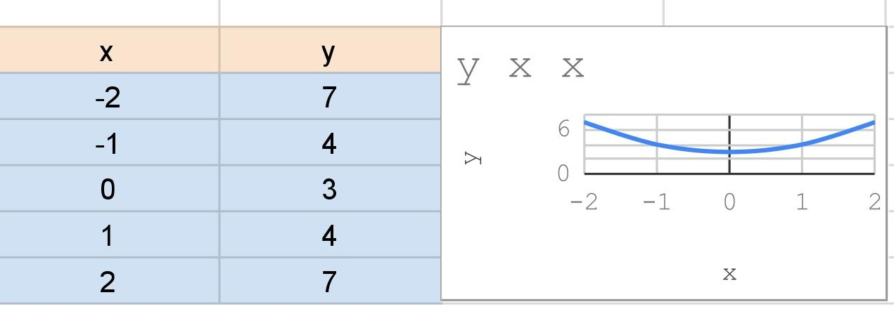

Chama-se função quadrática, ou função polinomial do 2º grau, qualquer função f de IR em IR dada por uma lei da forma f(x) = ax² + bx + c, onde a, b e c são números reais e a 0.
O gráfico de uma função polinomial do 2º grau, y = ax² + bx + c, com a 0, é uma curva chamada parábola. Por exemplo, vamos construir o gráfico da função y = x² + x: Primeiro atribuímos a x alguns valores, depois calculamos o valor correspondente de y e, em seguida, ligamos os pontos assim obtidos.
Para montarmos o gráfico é necessária a contrução de uma tabela
Por exemplo temos a lei de formação x²+y, teremos que a tabela, com tal gráfico
Observação:
Ao construir o gráfico de uma função quadrática y = ax2 + bx + c, notaremos sempre que:
1°Redes
1°Redes
O Centro Federal de Educação Tecnológica de Minas Gerais é uma instituição federal, vinculada ao Ministério da Educação, que se dispõe a oferecer ensino médio, cursos técnicos e superiores.
Este curso vai habilitar você a instalar e configurar dispositivos de comunicação digital e programas de computadores em equipamentos conectados em rede.
Na Web tem vários vídeos super legais para consulta :)
O HTML é a base do seu site, ou seja todo seu conteúdo está embutido nele, já o CSS é a estilização do site, para deixá-lo bonito e do jetinho que quiser, já o JS, é a parte de interação!